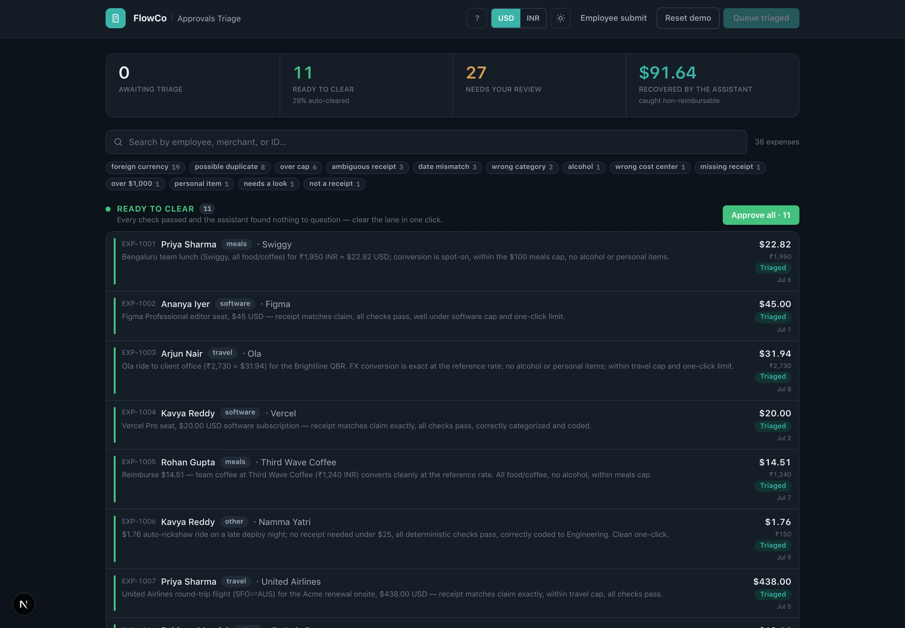

The assistant does the digging. The person makes the call.
Every requirement in the brief maps to one working feature on a live URL. One rule holds the whole thing together. Code decides who gets approved. The model reads what code cannot. The model can send a case to a human. It can never send one the other way.
Approvals are slow because of the digging, not the deciding.
A FlowCo approver does archaeology on every flagged expense. Squint at a receipt. Cross-reference a policy doc. Search a spreadsheet for duplicates. Email the employee. Wait. Re-review. The click to approve takes a second. Everything before it takes the afternoon.
So the assistant here does not approve or reject. It investigates. It reads the receipt, runs the policy math, converts the currency, compares the duplicates, and drafts the message when something is missing. Then it hands a person a decision they can make in seconds. Clean cases pool in a one-click lane. Everything else arrives with the work already done and a plain list of what the assistant could not settle.
The one case the brief asked for, in its own words
"As a member of FlowCo's internal Approvals team, when the assistant can't resolve something, a policy exception, an ambiguous receipt, a possible duplicate, I want an AI-assisted way to triage and clear it fast, so I'm not manually digging through every flagged case."
What one triage run does to the live queue
38
Expenses submitted
11
Auto-cleared
27
Sent to a person
$92
Non-reimbursable caught
Every number is produced live by claude-opus-4-8 reading real receipt photos and PDFs, not hard-coded. This is an India-based team. People pay in rupees, sometimes Singapore dollars or pounds, and get reimbursed in US dollars. The assistant converts every receipt automatically. The rest of this document walks each capability with a screenshot from that run.
The manual workflow, line by line, and what does it now
The brief lays out FlowCo's reality. A seven-screen employee form and a seven-step manual review, enforced by no system. Each line is a place the assistant now stands in. This is the map.
The approver's seven manual steps
What happens today
What the assistant does now
Gets an email with a link to the report
The expense lands in one queue, already investigated. No inbox, no context-switch.
Checks the amount against a static policy-cap doc that no system enforces
Code enforces every category cap. Over-cap is flagged before a person looks.
Eyeballs the receipt against the claim
Model reads the receipt, photo or PDF, in any currency, and reconciles it to the claim.
Under $500 and everything matches, one-click approve
These pool in a Ready-to-clear lane. Approve the whole lane in one click.
Anything off, email the employee, wait, re-review
Each is a code check and a drafted, specific message. Send it in one click.
Possible duplicate or exception, check a spreadsheet of past submissions
Model reads both records and says which kind of duplicate it is.
Approved goes to payroll. Flagged sits in a personal queue.
Every decision is one keystroke, fully audited, with an Undo.
The employee's seven form screens, replaced by one sentence
Screen the employee fills today
How the conversational submit handles it
1. Trip and purpose, linked cost center
Read from the sentence. Cost center picked from the person's department.
2. Category, cap shown but not enforced
Inferred from the merchant. The cap is then enforced downstream.
3. Merchant, date, currency
Parsed, including a relative date like "last night" and the currency.
4. Pre-tax amount, tax, tip
Split out when stated. Left blank and flagged when not.
5. Receipt upload, OCR amount shown back to confirm
The draft is shown back for a one-tap confirm. This exact pattern.
Code decides who gets approved. The model reads what code cannot.
This is the one decision the whole product rests on. The model never routes a case to approval on its own. Code owns the money math and the routing. The model does the parts only it can do, which is read a crumpled receipt, find an alcohol line, convert a currency, explain, and draft. Their outputs meet at a guardrail that can only ever make routing stricter.
Deterministic checks, pure code
Policy caps per category. Meals $100, travel $500, lodging $250 a night, software $200, other $100.
Amount limits. One-click under $500, always-review over $1,000.
Duplicate detection. Same person and merchant, same day or same amount within 3 days.
Receipt presence above $25, cost center against department, currency with a reference rate.
Model, claude-opus-4-8, vision
Reads the receipt. Line items, handwriting, foreign taxes, photo or PDF.
Finds what code cannot. Alcohol, a personal item, a file that is not a receipt.
Converts the currency and checks the claim against the converted total.
Names its own doubt and drafts the message to the employee.
The routing guardrail
A case auto-clears only when every code check passes, the model is confident, the receipt reconciles, and the model found no alcohol, no personal item, no mis-categorization, no date gap, and no file that is not a receipt. The model can send a case to a human. There is no path back.
Why the split earns its keep
A "no alcohol" rule cannot exist in code. Nothing in the structured claim says what was ordered. So it is the model's job alone. But the model does not get to approve around it. The guardrail refuses to clear any receipt where the model reported a non-reimbursable line. Code owns the consequence. The model owns the reading.
Stack: Next.js, React, Tailwind, the Anthropic SDK with schema-constrained structured outputs and adaptive thinking, Supabase in production and in-memory locally, deployed on Vercel with hourly model-call caps and vision-sized timeouts.
One click on Run assistant triage. Code checks run first. Then the model reads every receipt and converts every foreign amount. Thirty-eight submissions settle into two lanes. The clean ones ready to clear together, the rest arriving with the work done.
The queue after one run. The clean lane holds small local spend and the US software the team runs on. Each foreign amount shows the original next to the converted dollars, so a Swiggy lunch reads ₹1,950 and $22.82 at once. The headline number is money the assistant caught that policy says not to pay. The filter chips count every reason a case stopped.
The lane is the product
Auto-clear is earned, not assumed. A case reaches the green lane only when the whole guardrail is satisfied. That is what makes one click safe. A model verdict alone cannot put anything there.
Nothing is hidden
Every flagged case leads with the one-line reason and the list of what the assistant could not settle. The approver reads a conclusion, then opens the receipt and the checks if they want the detail.
This is the case that settled it for me. A real, crumpled phone photo of a ₹16,823 team dinner in Goa. Rupees, local GST and VAT. Code flags that it is over the meals cap and in a foreign currency. The thing that actually changes the payout is invisible to code.
One line, ₹935, that moves the number
The receipt has one alcohol line, a Goan Mudslide. Nothing in the structured claim says the word alcohol. Only reading the receipt finds it. The assistant does four things code cannot.
Finds the ₹935 cocktail and its own 22% VAT of ₹205.70.
Converts the ₹16,823 total to $196.83 at the reference rate.
Reads the word "Duplicate" on the bill and calls it a reprint, not a second claim.
Hands the approver the exact number to pay, $183.48.
Then it stops. The dinner is still over the $100 meals cap. That is a policy exception, and that is the approver's call, with the offsite purpose laid out. The model prepared the decision. It did not make it.
policy exceptionambiguous receiptforeign currency
The three cases the brief names, in one real receipt.
Money that has to come off, and a receipt it will not guess at
EXP-1024 · non-reimbursable
A personal item on a hotel folio
An ITC Gardenia folio for ₹17,833 hides a ₹1,583 in-room movie. The model deducts it and its tax, converts the rest, and lands the reimbursable at $190. The approver reads one ledger.
EXP-1026 · vision honesty
A receipt it cannot read
A faded auto-rickshaw receipt. The model reads what it can, then says the printed total is too blurred to confirm and sends it to a human. It does not invent a number. Refusing to guess is the feature.
The line under both
When money has to move or a number is unclear, a person confirms it. The assistant's job is to make that take five seconds. Here is the amount to deduct. Here is exactly what I could not read. It does not make the call.
Reconciliation is the signature interaction of the whole product. Whenever money comes off, for alcohol, a personal item, or a currency gap, the panel shows one ledger. Claimed, then deductions, then Reimburse. The approver approves the corrected number, not the claimed one.
The team pays in rupees. FlowCo pays in dollars. The assistant does the math.
Twenty-eight of the thirty-eight receipts are in rupees, and two more in Singapore dollars. The reimbursement currency is the dollar. The assistant converts every receipt at this cycle's reference rate (1 USD is about 85.5 INR and 1.28 SGD), stores the claim in USD, and shows the original amount next to the converted dollars. A small local expense clears on its own. A larger one goes to a person to confirm the rate before pay. The conversion is not cosmetic: it runs in code, so a rupee receipt can never land in the queue as if it were dollars, and a viewer can flip the whole console between USD and INR with one toggle.
The conversion, shown plainly. Receipt in rupees, the reference rate, the converted dollars, and a note that a person confirms the rate before pay. The same block handles Singapore dollars the same way.
Where the conversion earns its place
Two cases prove it does real work, not decoration.
A Singapore hotel. S$225 on the receipt, claimed as $235. At the reference rate S$225 is about $176, so the claim is overstated by roughly $59. The model reads the receipt in its own currency, sees the gap, and asks a person to check it.
The submit side too. An employee types "team dinner, about ₹6,400". The draft comes back as ₹6,400 paid, $74.88 to reimburse, not a $6,400 claim. Code does the conversion the same way on both surfaces.
Conversion is not just a display. It is where a foreign over-claim becomes visible. A raw dollar figure hides it. The receipt in its own currency does not.
Code catches what is measurably wrong. These four are wrong in ways only reading and reasoning surface. Each still goes to a person, because a judgment about intent is the approver's to confirm.
EXP-1023 · mis-categorization
A dinner filed as travel
A ₹15,420 client dinner at a barbecue place, filed as travel, cap $500, instead of meals, cap $100. The model names the category that does not fit and the cap it dodges.
EXP-1027 and 1028 · cap avoidance
One dinner, split to duck the cap
Two Barbeque Nation checks, same table, same card, five minutes apart. The model puts the ₹15,490 back together and flags it as one dinner split to keep each half under the cap.
EXP-1031 · double gratuity
Tipped twice
An 18% service charge already on the bill, plus a tip added on top. The model catches the double gratuity, and reads the non-alcoholic cooler correctly so it does not false-flag it.
EXP-1030 · date reconciliation
A receipt dated wrong
The bill reads 2 July. The claim says 6 July. The amounts match, so nothing else trips. The model flags the four-day gap, and a code guardrail keeps a date mismatch from ever auto-clearing.
Telling a real double-submission from a coincidence
Possible duplicate is one of the three cases the brief names. Code flags the candidates, same person, same merchant, close in time. The hard part, and the model's real job, is saying which kind each one is. The same capability, shown telling them apart.
reject oneA real double-submission. The same $20 Notion seat, same day, the same receipt attached twice. The model's call is to approve one and reject the other. Money FlowCo would otherwise pay twice.
approve bothA coincidence that looks the same to code. Two Goa breakfast bills, same table and 14:07 timestamp, but different items and consecutive bill numbers. A real split of one group meal. The model clears the doubt.
Why this is the depth of it
A spreadsheet lookup flags both of these. A naive assistant would reject both or approve both. Telling them apart takes reading the two receipts and reasoning about what happened. That is where the model earns its keep, not in the flagging.
A file that is not a receipt gets caught, not reconciled
People upload the wrong file. A poster, a screenshot, a book, a random photo. A naive reader would invent an amount from it. This one checks first that the file is a receipt at all. If it is not, it says what the file actually is, refuses to make up a number, and sends it to a person.
A conference poster, filed as a $320 registration
An employee back from a Singapore research conference uploaded the PDF of her poster instead of the registration receipt. The model reads it, sees a scientific poster on a semiconductor device, and says so.
Marks the receipt status not_a_receipt.
Names the file. A conference research poster, not a payment record.
Drafts a note asking for the actual registration receipt.
Sends it to a person. It never fabricates the $320.
A second case, a personal-finance book bought on Amazon and expensed, is caught the same way. The model reads the title, calls it a personal purchase, not a business expense, and asks a person to confirm before it is paid.
A capable model, handed the decision, became an unreliable decider
Before any of the structure above, I built the naive version. One prompt, the receipt, extract the total and decide. I set a trap. A receipt that supports $84.50 and a claim of $85.00, a fifty-cent gray-zone overclaim, the exact thing triage exists to catch. I expected the model to misread the handwriting. It did not. Four correct reads out of four. Reading was not the weak point. This was.
// same receipt, $84.50. same claim, $85.00. three identical runs, verbatim.
Run 1 "decision": "flag_for_review"// correct
Run 2 "decision": "approved"// "approve at $84.50 rather than the claimed $85.00"
Run 3 "decision": "approve"// "approve for $84.50 ... or request clarification"
Three failures in one probe. It flipped its decision on identical input, a coin flip in exactly the gray zone. It invented an action, approve at the corrected amount, a partial reimbursement the product does not have. And its output changed shape run to run, approve against approved, number against string, which breaks any queue built on top.
Each failure became a rule
What the naive model did
What changed in the shipped engine
Gray-zone routing was a coin flip
Routing is code. Any mismatch, failed check, or confidence under 0.8 goes to a person, every time. The model can only make routing stricter.
Invented "approve at the corrected amount"
Recommendations are a fixed set of actions that exist, approve, reject, request info. The person holds the only approve button on a flagged case.
Output changed shape between runs
Structured output validates every verdict against a schema. No fences, no type flips.
Doubt was buried in prose
The unresolved list is a required field. The model has to name what it could not settle, and the queue leads with it.
The lesson
The applied-AI work here was not perception. The model reads receipts better than I do. It was decision rights and output discipline. A capable model handed decision authority becomes an unreliable decider in exactly the ambiguous cases where the decision matters most. So code decides who decides, and the model does what only it can.
That same $85 case is EXP-1008 in the app today. It goes to a person every time, with the fifty-cent gap named and the message drafted. The fix is live.
Seven screens, replaced by one sentence and a photo
The brief's optional side, in its words, submit an expense by describing it instead of filling out seven screens, in under a minute from a phone. The same engine that reads receipts for the approver reads the sentence for the employee. Three steps.
1. Describe. One sentence, the way you would tell a coworker, or tap an example. A receipt photo is optional. The person picks their name from a short list.
2. Confirm. The model fills every field and shows the draft back, the OCR-shown-back pattern from the brief. Note the top line: a rupee amount typed as "₹6,400" comes back as ₹6,400 paid, $74.88 to reimburse, converted in code, never a $6,400 claim. A plain list names what is still missing.
3. Sent, in under a minute
One tap drops it into the approver's queue, where triage runs on its own. The whole flow was checked on a 375 pixel phone screen. A sentence, a confirm, a tap.
One engine, two surfaces. The employee's sentence and the approver's receipt run through the same code path. That is the reason to build the optional side. It proves the engine works in both directions.
Built as a calm financial console, not generic SaaS
The interface is built to not make you think. A precise reconciliation tool. Slate ink, a teal accent, a warm paper canvas, and Apple SF Pro with tabular numerals on every amount, the treatment Apple uses in Wallet and Numbers. A full dark mode ships with it.
Light. Warm paper, tabular figures, the reconciliation ledger as the signature element, the local amount shown under the converted dollars.

Dark. A no-flash dark mode that follows the system and a manual toggle. Same information, same structure.
Built against the Laws of UX
Recognition over recall. A first-run guide, plain tooltips on every flag, a shortcut overlay.
Flow and Fitts. A sticky decide bar, auto-advance, full keyboard nav.
Doherty. Skeletons, a live triage progress bar, a count-up on money recovered.
User control. Every decision raises a toast with a real Undo. Nothing is a dead end.
Ready for a demo
Reset demo. A confirmed reset returns the queue to its 38-case start, so anyone can run it from the top.
Fully mobile. The whole console works on a phone. The queue rows reflow, the case panel goes full screen, and the amounts stay legible at 375 px.
USD or INR. One header toggle flips every amount in the console between dollars and rupees.
Honest states. A clearly labeled mock mode when no API key is present.
Peak and end. An inbox-zero all-caught-up, a warm sent-to-approvals.
A rough-prototype brief, with the seams a public AI demo needs
The brief said a rough prototype is fine. It is a prototype. But the seams a public, AI-backed demo actually needs are real, because those seams are where an applied-AI product lives or dies.
Cost and safety
Hourly model-call caps. An atomic SQL counter, so an unattended URL cannot burn the budget. A friendly message when it is spent.
Vision-sized timeouts. Opus reading a receipt is a 10 to 30 second call. The routes are sized for it.
A receipt that fails to load never crashes triage. It goes to a person as unverified.
State and deploy
Supabase in production, Postgres for state and Storage for uploads, in-memory locally, chosen by env vars.
Every AI action is audited. An append-only trail on each expense. Decisions carry an Undo.
Deployed on Vercel, receipts traced into the function, one command to redeploy.
What I would measure in production
Percent auto-cleared and time to decision
The value itself
Re-review loop rate
Do the drafted asks resolve in one round
False-approve rate
The guardrail metric. This is payroll money.
What I dropped, and what is next
Dropped on purpose. Auth, real email and Slack sends, a payroll write-back, and a mobile approver queue. None of them change whether the triage judgment is right, so the time went to the receipt reading, the ledger, and the guardrail. Next. A feedback loop from approver overrides back into the prompts, since every override is a labeled signal. Real sends behind the drafted messages. A policy editor so Finance changes a cap without a deploy.
The assistant turns digging into deciding, and is never handed the decision itself.
That one rule is what makes the auto-clear lane safe to trust, the reconciliation honest, and the failure story fixable. Everything in this document sits on it. Thirty-eight live cases, every reason a case stops, receipt vision, automatic currency conversion, the duplicate call, the not-a-receipt catch, and the conversational submit.
See it live
flowco-two.vercel.app
Click Run assistant triage, then open EXP-1013. Use Reset demo to start over.
Read the build
github.com/rajdeepmondaldotcom/flowco
The triage engine, the guardrail, and the verbatim failure-story probes are all in the repo.
FlowCo · Approvals Triage
Rajdeep Mondal · Applied AI Product Leader take-home · July 2026